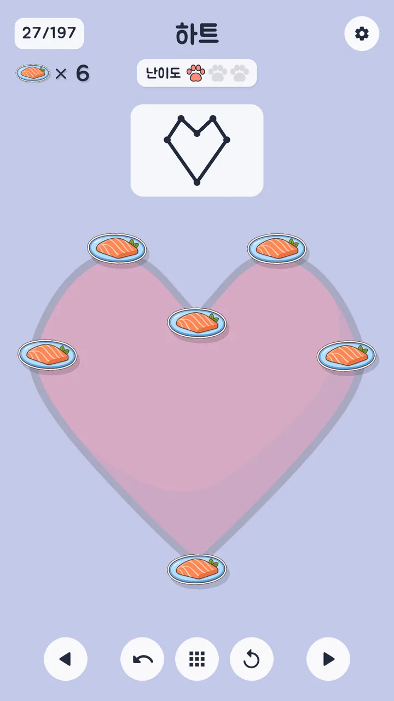
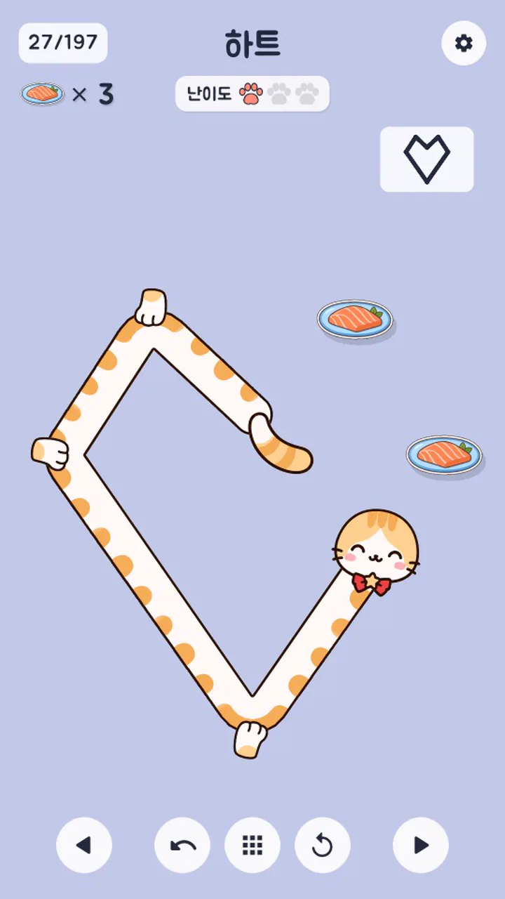
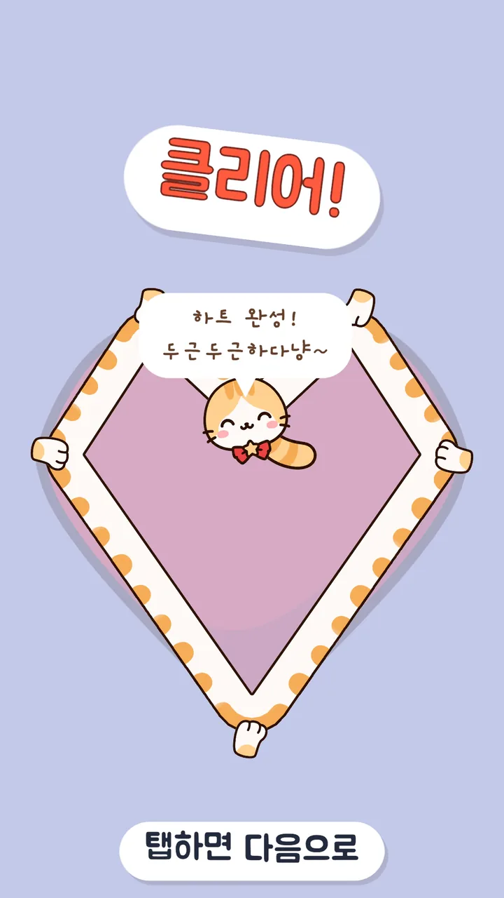
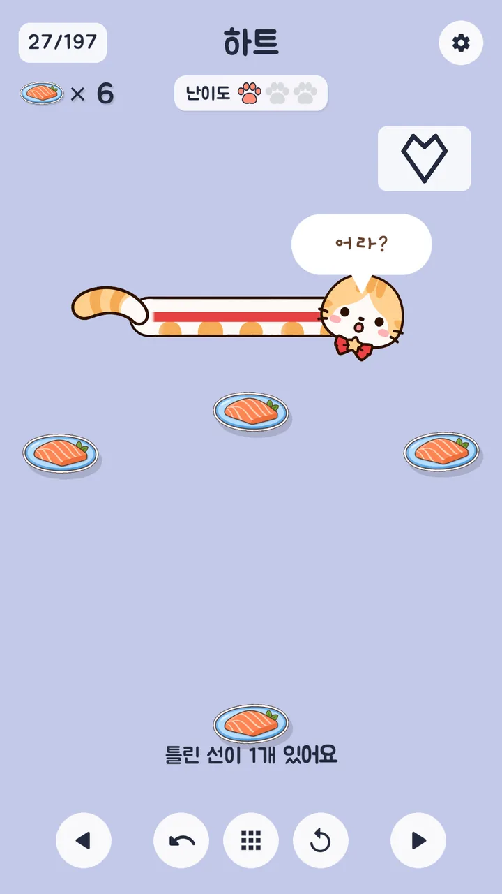
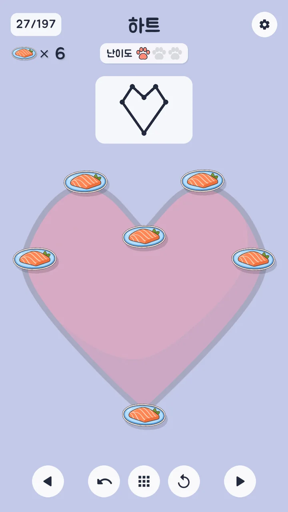
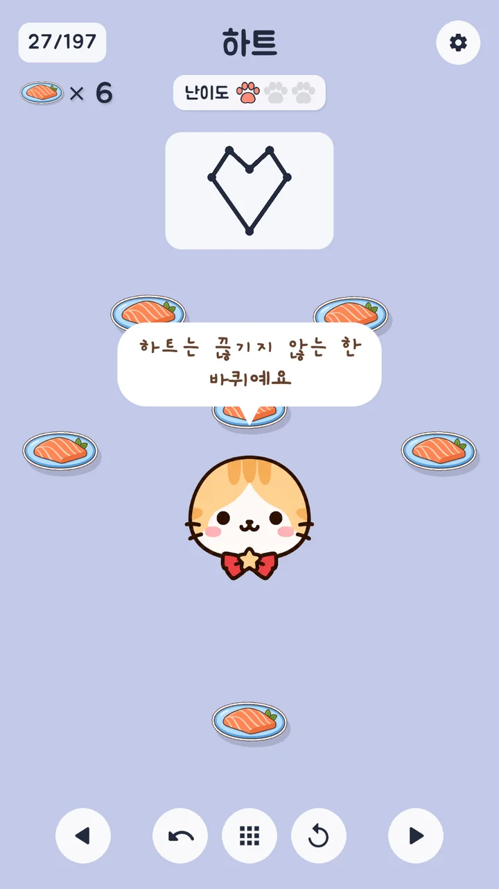
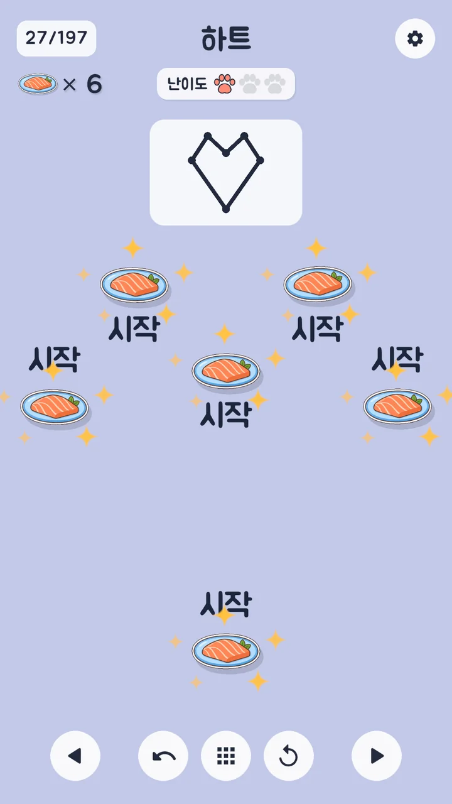
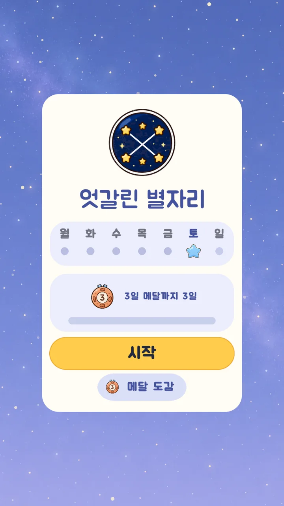
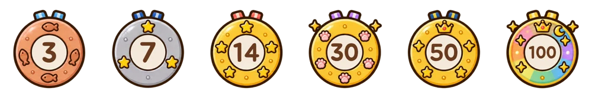

기획부터 출시까지 · 1인 개발
쭉쭉냥 : 고양이 퍼즐
고양이를 쭉 늘려 그리는 한붓그리기 퍼즐
- 레벨 197개
- 매일 새 퍼즐 3개
- Google Play 178개국
방향키나 마우스 휠로 넘겨 보세요 →
1. 게임 · 한눈에
고양이 몸이 그대로 선이 되는 퍼즐
-

1 보기견본 그림이 잠깐 보였다 사라짐
-

2 감기냥이를 끌어 연어 접시에 하나씩 감기
-

3 완성모든 선을 한 번씩 지나면 그림 완성
1. 게임 · 만든 이유
"고양이를 쭉 늘려서 그림을 그리면 귀엽지 않을까?"
- 출발누구나 아는 한붓그리기 + 귀여운 고양이
- 고민선 긋기 퍼즐은 이미 많음. 손맛으로 승부
- 첫 시제품못을 교차 없이 감기. 목표가 눈에 안 들어옴
- 방향 전환견본 그림을 따라 그리는 규칙으로 변경
1. 게임 · 돌아가는 구조
한 판마다 반복되는 플레이 흐름
- 보기견본 그림 잠깐 확인 (쉬운 판 3.5초 → 어려운 판 1초)
- 감기시작 접시를 골라 냥이를 끌어 감기
- 반응맞으면 음이 오르고 기쁜 표정, 틀리면 빨간 선과 놀란 표정
- 보상숨었던 그림이 완성 그림으로 등장
- 다시탭 한 번으로 다음 판, 매일 새 별자리 3개
1. 게임 · 플레이어가 느끼는 것
정답은 손맛과 소리로 알려 주기
- 감길 때마다 한 음씩 상승한 판을 풀면 짧은 멜로디 하나
- 냥이 표정이 곧 판정맞으면 기쁨, 틀리면 깜짝
- 실패 없음시간·목숨·횟수 제한 없이 ↶ 한 단계 뒤로
맞으면

틀리면
1. 게임 · 플레이어가 느끼는 것
막혀도 끝까지 깰 수 있게, 답은 직접 찾게
막힌 시간이 쌓이면 약한 도움부터 차례로. 정답 경로는 끝까지 보여 주지 않음
-
25초① 그림 다시 보기
무엇을 그리는지 다시 떠올리게

-
40초② 순서 요령 한마디
냥이가 그리는 순서의 요령을 귀띔

-
55초③ 시작 접시 반짝임
어디서 시작하면 되는지 표시

쉬운 판 기준. 어려운 판은 60 · 90 · 120초로 늦춰 고민할 시간을 더 줌. 3번 실패하면 앞당김

1. 게임 · 유저 리텐션
유저 리텐션: 일일 도전과 연속 기록 메달
레벨 197개를 다 깨면 할 것이 없음. 광고와 결제가 없는 무료 게임이라 레벨을 계속 추가하기도 어려움
- 일일 도전날짜로 매일 새 별자리 퍼즐 3개. 서버와 업데이트 없이 계속 돌아감
- 연속 기록 메달3 · 7 · 14 · 30 · 50 · 100일. 타이틀 화면에 지금 메달 표시
- 메달 깨짐기록이 끊기면 메달이 깨지고 "바로 도전" 버튼

2. AI와 만든 과정 · 역할 나누기
무엇을 만들지는 내가, 만드는 손은 AI가
내가 판단한 것
- 게임 규칙과 난이도 기준
- 소리와 그림의 톤
- 레벨 순서와 범위
- 출시 전 마지막 확인
AI에게 맡긴 것
- 게임 코드와 레벨 검사 도구
- 레벨 배경 그림 197장
- 자동 테스트와 빌드
- 비슷한 퍼즐 게임 조사, 스토어 문구
2. AI와 만든 과정 구조화 능력
레벨 100개 추가를 다섯 단계와 통과 기준으로
25개씩 4묶음. 기준을 넘은 레벨만 다음 단계로
- 1모양 잡기접시와 선을 좌표로 적고 보드 크기에 맞춤
- 2간격 검사접시 사이 1.3 이상, 선과 접시 사이 0.45 이상파이썬
- 3순서 찾기와 재생세 가지 조작으로 자동 재생해 풀려야 통과파이썬
- 4일직선 거르기접시를 거의 곧게(170° 넘게) 지나는 순서는 버림파이썬
- 5게임에 넣고 확정전체를 난이도 순으로 다시 섞고 Unity 테스트 전부 통과Unity
배경 그림은 그 뒤 Codex가 그리고 선 위에 겹쳐 확인. 마지막에 197개만 남김
체험판 · 실제 도구의 핵심 동작
접시를 끌어 옮겨 보세요
2. AI와 만든 과정 AI 리더십
세밀한 조정은 내가 직접, 레벨 편집 도구
- 만든 이유
- 접시 위치를 말로 설명해 고치게 하는 대신 직접 끌어서 조정. AI 사용량도 아낌
- 하는 일
- 접시를 끌어 옮기면 간격과 일직선 문제를 바로 표시
- 게임에 반영
- 저장한 수정은 파이썬 검사를 모두 통과할 때만 반영
- 쓴 곳
- 레벨 18개의 접시 위치 조정. 같은 방식으로 UI 배치 도구도 제작
2. AI와 만든 과정 AI 리더십
AI마다 맡을 일을 나누고, 지킬 것은 글로 고정
- Claude Code게임 코드, 검사 도구, 테스트, 빌드
- Codex레벨 배경 197장, 앱 아이콘, 메달 그림
- Sonnet비슷한 퍼즐 게임 8개 조사, 스토어 문구
- Gemini직접 쓴 글 다듬기
- 규칙 파일AI가 지킬 것과 내 취향을 파일로 적어 두기
- 넘기기Claude가 그림 프롬프트 작성 → Codex가 그림 → Claude가 다시 확인
- 기록날마다 한 일과 이유 남기기 (작업 기록 14일치, 커밋 188개)
2. AI와 만든 과정 AI 리더십
AI 결과물도 기준에 안 맞으면 되돌리기
규칙 파일에 적어 둔 기준
- 테스트는 전부 통과해야 반영
- UI 확인은 세로 화면 1080×1920으로
- 힌트는 답을 너무 빨리 주지 않기
- 올리기 전에는 매번 내 확인
되돌린 사례 AI가 낸 것 → 내 판단
- 묵직한 "두둥 탁" 효과음"별로다, 기존 걸로". 가벼운 소리 유지
- 다시 그린 배경 그림 4장각져서 귀엽지 않음. 처음 그림을 두고 접시를 직접 조정
- 가로 화면으로 한 UI 점검세로로 다시 점검, 규칙에 추가
- 올 클리어 화면굵기와 버튼 폭까지 7번 넘게 고쳐 완성
자동 테스트 134 → 1,573개 · 코드 점검에서 찾은 20건 모두 수정
2. AI와 만든 과정 학습 실행력
모르는 기술은 AI에게 배워 게임에 바로 적용
| 풀어야 했던 문제 | AI와 익힌 것 | 게임에 적용 |
|---|---|---|
| 서버 없이 매일 새 퍼즐 | 날짜를 씨앗으로 쓰는 난수. 같은 날짜면 같은 결과 | 일일 도전 하루 3개, 같은 날엔 누구에게나 같은 퍼즐 |
| 풀 수 없는 모양 걸러 내기 | 한붓그리기 원리. 선이 홀수 개 모인 접시는 0개 또는 2개 | 레벨 검사 도구와 시작 접시 힌트 |
| 검사는 통과했는데 게임에서 접시를 건너뜀 | 거의 일직선인 세 접시는 소수점 오차로 가운데를 놓침 | 170° 넘는 꺾임 금지를 편집 도구와 검사 규칙으로 |
| 끌 때 냥이 머리가 한 박자 늦음 | 한 프레임 안의 계산 순서와 그리는 순서 | 몸통 그리기를 프레임 맨 뒤로, 폰은 60프레임 |
2. AI와 만든 과정 · 고민한 지점 ①
"어떤 판이 어려운 판인가"를 다시 정하기
- 처음 기준선 수, 갈림길, 막다른 길 확률 등 여섯 가지를 더한 점수
- 어긋남같은 "한 번 다시 지나기"인데 국자는 보통, 돛단배는 어려움
- 관찰"사람들이 어렵게 느끼는 건 같은 접시를 한 번 더 지나갈 때"
- 결정다시 지나는 횟수 하나로 단계 구분. 접시와 선은 그대로 두고 단계만 다시 나눔
- 남긴 것점수는 버리지 않고 같은 단계 안의 순서와 힌트 시간에 사용
0번쉬움 · 69개예: 집
1번보통 · 38개예: 물고기
2번 이상어려움 · 90개예: 연 (예전 점수로는 낮은 편)
초록 접시 = 이미 지나갔는데 다시 지나야 하는 접시
2. AI와 만든 과정 · 고민한 지점 ②
답을 빼앗지 않는 힌트, 실수해도 괜찮은 조작
-
힌트
문제막히면 힌트가 바로 "여기서 시작해요"
바꿈① 그림 다시 보기 → ② 순서 요령
→ ③ 시작 접시 반짝임이유어디서 시작할지가 이 퍼즐의 가장 큰 고민거리
시작 위치를 말하던 문구 49개를 순서 요령으로 고쳐 씀.
요령의 예: "같은 생선을 두 번 지나는 건 괜찮아요" -
조작
문제테스트 의견 "연결한 줄이 자꾸 끊긴다"
바꿈한 번 감긴 접시는 잠금.
떼는 것은 ↶ 버튼으로만원칙화면에서 먹힌 접시는 항상 연결
3. 결과 · 출시까지
비공개 테스트에서 178개국 출시까지
- 비공개 테스트테스터 12명 · 14일
- 1.0.1 검토 통과
- 데이터 보안 양식 고쳐 다시 제출
- 정식 출시 승인178개국
- 197레벨
- 1,573자동 테스트
- 178출시 국가
3. 결과 · 정리
한 장 정리
- 구조화 능력
레벨 100개 추가를 다섯 단계와 통과 기준으로 쪼개 197개 완성
- AI 리더십
역할과 기준은 내가 정하고, 기준에 안 맞는 결과는 되돌림
- 학습 실행력
모르는 기술은 AI와 익혀 게임에 바로 적용
혼자서 기획부터 Google Play 178개국 출시까지